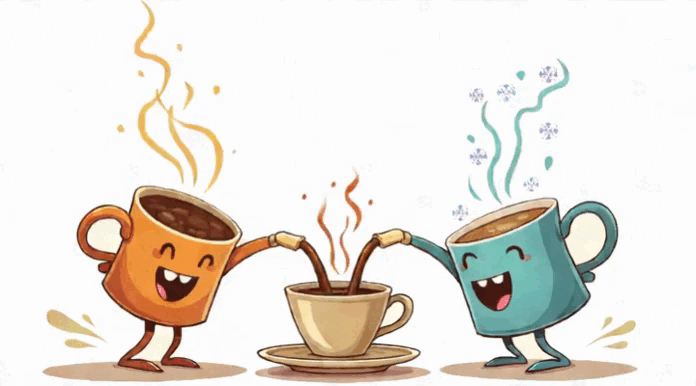

En la interacción entre 2 cuerpos con diferentes temperaturas, el calor perdido por un cuerpo es igual al calor ganado por el otro cuerpo.
Calor perdido
(Cuerpo 1)
(Cuerpo 1)
Qp = Qg
Calor ganado
(Cuerpo 2)
(Cuerpo 2)
A continuación se presenta una animación que ejemplifica el principio de conservación del calor. En donde, la primera taza emite vapor, mostrando que está caliente, mientras que la segunda tiene hielo, indicando que está fría. Al interactuar, aparece una tercera taza en el centro, donde se muestra un color intermedio, simbolizando la temperatura equilibrada alcanzada por la transferencia de calor entre las dos tazas originales.
